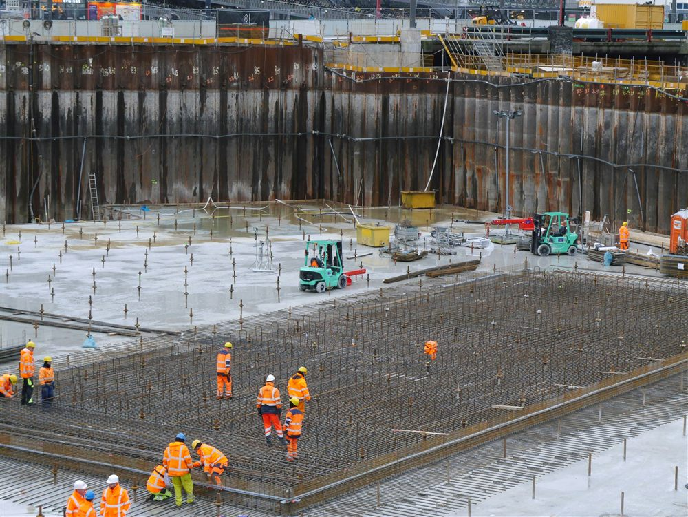
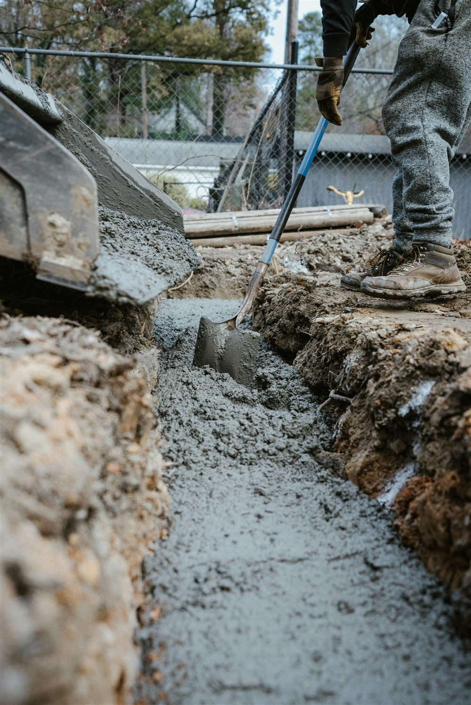

Fondation superficielle : définition et principe
Une fondation transmet au sol les charges de la structure qu'elle porte. On parle de fondation superficielle lorsque cette transmission se fait à faible profondeur, dans une couche de sol suffisamment portante proche de la surface : semelles isolées, semelles filantes et radier général en font partie. À l'inverse, une fondation profonde (pieux, puits) va chercher un sol porteur en profondeur, lorsque les couches superficielles ne peuvent pas reprendre les charges du bâtiment.
Le choix entre fondation superficielle et fondation profonde n'est pas une question de préférence : il découle directement de l'étude de sol. Une mission géotechnique de type G2 (norme NF P 94-500) précise la portance des différentes couches, la présence éventuelle de sols compressibles ou de nappe phréatique, et permet au bureau d'études de dimensionner la fondation adaptée.
Pas de fondation sans étude de sol. Dimensionner une fondation sans connaître la portance réelle du terrain revient à deviner. Un sol argileux gonflant, un remblai mal compacté ou une nappe proche de la surface changent complètement la solution à retenir, y compris entre deux parcelles voisines.
Semelles isolées et semelles filantes
Les semelles sont la solution la plus courante lorsque le sol présente une portance correcte et homogène sous l'emprise du bâtiment.
- La semelle isolée reprend une charge concentrée, typiquement sous un poteau. Elle est généralement de forme carrée ou rectangulaire, armée par un quadrillage de barres en nappe basse.
- La semelle filante court sous un mur porteur continu (mur de refend, façade porteuse) et répartit la charge linéairement le long de sa longueur.
Dans les deux cas, le dimensionnement suit la même logique : la largeur de la semelle est fixée par la contrainte admissible du sol (la charge à reprendre divisée par la portance disponible), tandis que sa hauteur et son ferraillage sont vérifiés selon l'Eurocode 2 (NF EN 1992-1-1), le plus souvent par la méthode des bielles pour les semelles dites rigides.

Le radier général, quand le sol l'impose
Lorsque la portance du sol est faible, hétérogène, ou que les semelles isolées deviendraient trop rapprochées les unes des autres (au point de se chevaucher), la solution devient le radier général : une dalle en béton armé continue, coulée sous l'ensemble de l'emprise du bâtiment, qui répartit les charges sur toute la surface disponible plutôt que sur des points ou des lignes.
Le radier présente aussi l'avantage de limiter les tassements différentiels entre points d'appui, puisque l'ensemble de la structure repose sur une seule dalle rigide. Il est en revanche plus consommateur de béton et d'acier qu'une solution en semelles, et son dimensionnement (épaisseur, ferraillage en nappes croisées, redans éventuels sous les porteurs) doit tenir compte de l'interaction sol-structure, souvent modélisée à partir du coefficient de réaction du sol issu de l'étude géotechnique.
Semelles ou radier : comment se fait le choix
Le tableau ci-dessous résume les critères qui orientent, en pratique, vers l'une ou l'autre solution. Les valeurs de portance indiquées sont des ordres de grandeur : elles doivent toujours être confirmées par l'étude de sol propre au projet.
| Type de fondation | Contexte d'emploi | Profondeur d'ancrage indicative | Portance du sol requise (ordre de grandeur) |
|---|---|---|---|
| Semelle isolée | Charge concentrée sous poteau, sol homogène | ≥ 0,50 m | ≥ 0,15 MPa |
| Semelle filante | Mur porteur continu, sol homogène | ≥ 0,50 m | ≥ 0,10 MPa |
| Radier général | Sol de portance faible, hétérogène, ou semelles trop rapprochées | Fond de fouille nivelé, hors terre végétale | 0,05 à 0,10 MPa possible |
Points de vigilance techniques
Le dimensionnement théorique ne suffit pas : plusieurs dispositions constructives conditionnent la durabilité et la fiabilité de la fondation.
- Profondeur d'ancrage : la fondation doit être ancrée sous la zone d'influence des variations saisonnières du sol (retrait-gonflement des argiles, gel en climat continental) et sous la terre végétale, jamais posée sur un remblai non contrôlé.
- Béton de propreté : une couche de 4 à 5 cm de béton faiblement dosé, coulée en fond de fouille avant le ferraillage, régularise le support et évite que les armatures ne soient au contact direct de la terre.
- Enrobage des armatures : selon l'Eurocode 2, un enrobage nominal renforcé (généralement 75 mm en l'absence de béton de propreté, ramené à des valeurs proches de 40 à 50 mm lorsqu'un béton de propreté est mis en œuvre) protège les aciers du contact avec le terrain, plus agressif qu'un environnement extérieur classique.
- Arase de fondation : le niveau supérieur de la semelle ou du radier doit être fixé en cohérence avec le plan de masse, pour garantir la protection des aciers d'attente et la mise hors d'eau du soubassement.
Le béton de propreté n'est pas une option de confort. Sans cette couche de régularisation, les armatures reposent directement sur une terre irrégulière et humide : l'enrobage réel devient impossible à garantir, et la corrosion des aciers peut démarrer avant même la fin du chantier.

Erreurs et pathologies fréquentes
Plusieurs désordres reviennent régulièrement lorsque le dimensionnement ou la mise en œuvre des fondations superficielles a été négligé :
- Tassements différentiels : deux semelles reposant sur des couches de portance différente peuvent tasser inégalement, provoquant des fissures obliques caractéristiques dans les murs.
- Ancrage insuffisant : une fondation trop peu profonde reste sensible aux variations d'humidité du sol superficiel, en particulier sur sols argileux.
- Semelles voisines trop rapprochées : lorsque les bulbes de contrainte de deux semelles isolées se recoupent en profondeur, la portance réelle du sol est surestimée si le calcul les traite indépendamment.
- Absence de recoupement avec un ouvrage existant : en extension ou en mitoyenneté, une fondation neuve mal calée par rapport à une fondation ancienne peut désorganiser le sol sous cette dernière.
Ces désordres se corrigent difficilement une fois le bâtiment achevé. Ils s'évitent en amont, par une étude de sol adaptée et un dimensionnement conforme à l'Eurocode 2 et à la norme géotechnique NF P 94-261, qui encadre le calcul des fondations superficielles en France.
Comment MH Structure vous accompagne
MH Structure dimensionne les fondations superficielles de votre projet à partir de votre étude de sol, en France et dans les DOM-TOM :
- Analyse de l'étude géotechnique et choix du type de fondation adapté.
- Note de calcul béton armé des semelles ou du radier, selon l'Eurocode 2.
- Plans de coffrage et d'armatures prêts pour le chantier.
- Coordination avec votre géotechnicien, votre architecte et le bureau de contrôle.
Un projet à fonder ? Transmettez-nous votre étude de sol et vos plans d'architecte : nous déterminons le type de fondation adapté et établissons la note de calcul correspondante. Devis gratuit sous 48h.
Illustrations : visuels générés par intelligence artificielle pour MH Structure.